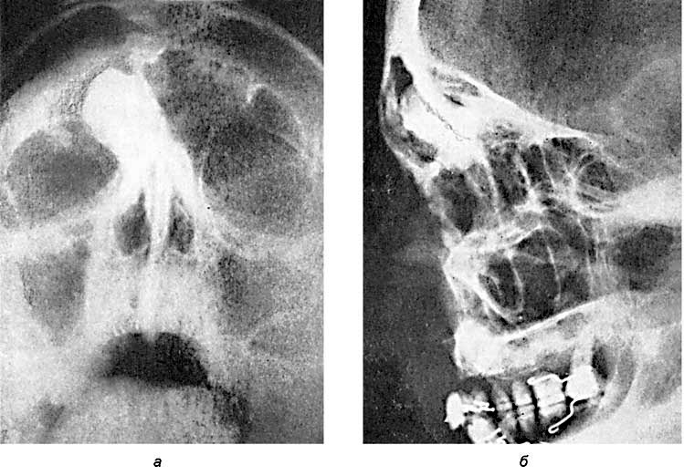
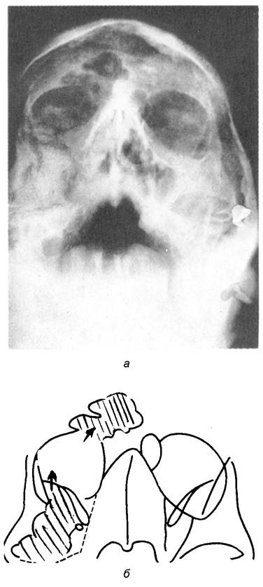
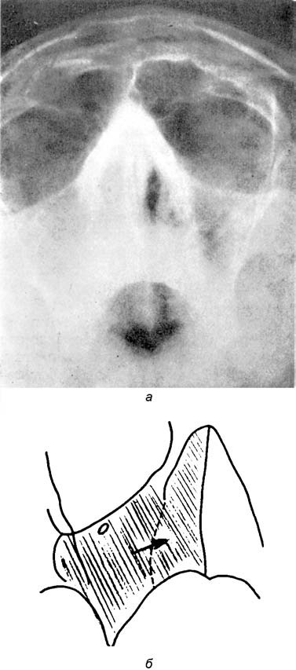
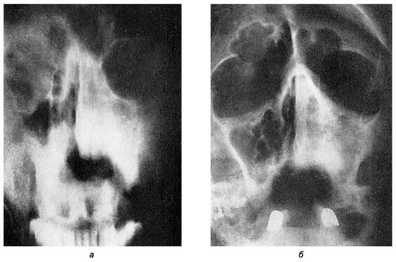
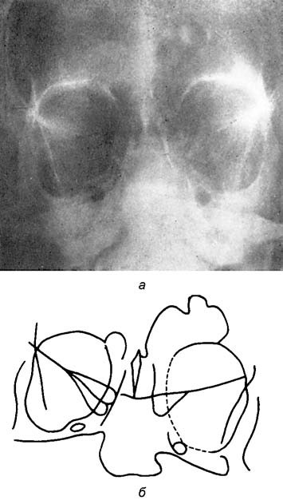
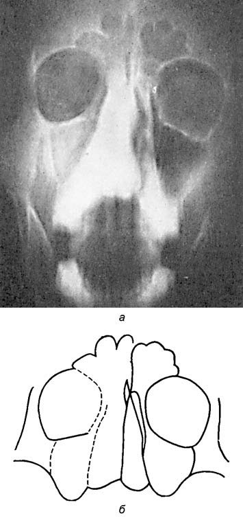

Опухоли носа и околоносовых пазух
Общие представления об онкологии
Онкология (греч. onkos — масса, опухоль и logos — учение) — раздел клинической медицины, посвященный изучению вопросов происхождения, профилактики, диагностики и лечения опухолевых заболеваний.
Предметом изучения онкологии являются опухоли1, представляющие собой патологические разрастания тканей, состоящих из качественно изменившихся клеток, атипичных в морфологическом отношении для того субстрата, на котором они возникли, отличающихся собственными структурой, дифференцировкой, метаболизмом, характером роста и особой инвазивностью по отношению к соседним тканям (злокачественные опухоли), способностью к метастазированию (распространению на расстоянии) и другими качествами. Хотя опухоли возникают и развиваются из нормальных тканей организма, их клеточный состав резко отличается по всем физиологическим, метаболическим и морфологическим параметрам от последних, и причиной тому является лежащая в основе их генеза так называемая анаплазия2. Клетки злокачественных опухолей обладают способностью инфильтрировать, прорастать и разрушать окружающие здоровые ткани. При удалении части опухоли она вновь разрастается (рецидив), не принимая участия в регенерации нормальной ткани, и более того, отторгнутые клетки, попадая в кровь или лимфу, обладая способностью к автономному существованию, имплантируются в здоровые ткани и образуют новые очаги опухолевого роста (метастазы).
Процесс образования опухоли определяется термином онкогенез, сущность которого, по современным представлениям, заключается в следующем. Каждая злокачественная опухоль возникает в результате размножения одной или нескольких клеток с измененным геномом. Нарушение генома, т. е. комплекса генов, управляющих биологическими процессами клетки, происходящее при онкогенезе, приводит к изменению нормальных клеточных генов — протоонкогенов. Измененные протоонкогены, характерные для опухолевых клеток, называют онкогенами. В нормальном геноме выявлено более 20 различных протоонкогенов. Появление онкогенов подавляется соответствующими гормонами и системой противоонкогенного иммунитета. Появление одного или двух онкогенов, не блокированных механизмом их подавления, приводит к размножению атипичных клеток и образованию опухоли.
Причинами онкогенеза могут являться наследственная предрасположенность к образованию опухолей и действие внешних онкогенных агентов — различных физических, химических и биологических факторов, способных преобразовать протоонкогены в онкогены и таким образом дать начало росту опухолевой ткани. Физическими онкогенными факторами являются ионизирующее излучение и УФ-лучи. К химическим факторам относятся полициклические ароматические углеводороды, в частности бензпирен, и такие соединения, как 2-нафтиламин, бензидин, аминоазосоединения, нитрозосоединения и др. Химические онкогенные факторы обнаружены в табачном дыме, имеются указания на образование в организме эндогенных онкогенных факторов (некоторые производные холестерина, триптофана и тирозина). Биологическими онкогенными факторами являются онкогенные вирусы, которые вызывают опухоли у экспериментальных животных.
Различают доброкачественные и злокачественные опухоли. Первые растут медленно, лишь отодвигая, раздвигая, а иногда сдавливая окружающие ткани, но не прорастая в них, например невринома преддверно-улиткового нерва. Вторые отличаются инфильтративным (инвазивным) ростом. Они прорастают в окружающие ткани, разрушая их структуру и нарушая их специфические функции, а также в силу патологического строения самой опухолевой ткани и искаженного метаболизма злокачественные опухоли выделяют токсические вещества, которые образуются также в результате их распада (катаболиты). Они обусловливают нарушение гемопоэза, эндокринных функций, нормальных обменных процессов, ведущих к анемии, кахексии и другим выраженным функциональным нарушениям организма.
Опухоли состоят из паренхимы и стромы. Паренхима — это собственно опухолевые клетки, а строма представляет собой прослойки соединительной ткани, в которой проходят сосуды и нервы. В номенклатуре опухолей отражено их тканевое происхождение: окончание ома (от греч. онкома — опухоль) присоединяется к корням слов, обозначающих ту или иную ткань (доброкачественную опухоль, возникающую из хрящевой ткани, называют хондрома, из мышечной ткани — миома, из жировой ткани — липома и т. д.). По отношению к некоторым опухолям сохраняются традиционно сложившиеся названия. Например, злокачественную опухоль из соединительной ткани называют саркомой в связи с тем, что на разрезе ее ткань напоминает рыбье мясо (от греч. sarx — мясо). Злокачественная эпителиома носит название «рак», вероятно в связи с отмеченным еще в древности сходством разрастаний некоторых из этих опухолей с клешнями рака. Эпителиальные опухоли разделяют на происходящие из железистого и плоского эпителия. Доброкачественную опухоль, в которой преобладают железистые структуры, называют аденомой, а злокачественную — аденокарциномой. Доброкачественные соединительнотканные опухоли в зависимости от вида ткани делят на фибромы, липомы, хондромы, остеомы, ангиомы, невромы, а злокачественные — соответственно на фибросаркомы, липосаркомы и т. д. Некоторые опухоли называют по органу или его части (менингиома, астроцитома, гепатома, инсулома и т. п.).
Злокачественные опухоли могут развиваться из предшествующих им относительно доброкачественных разрастаний (малигнизация), которые называют предопухолями. Кроме непосредственного влияния опухоли на окружающие ткани и органы, в которых она возникла, для опухоли характерны так называемые паранеопластические синдромы, носящие неспецифический характер и сопутствующие не только злокачественному росту, но и некоторым доброкачественным опухолям, например невриноме преддверно-улиткового нерва, развивающейся во внутреннем слуховом проходе, или менингеоме мостомозжечкового угла, сдавливающих соответствующие их локализации нервные стволы. Паранеопластические синдромы — это разнообразные патологические проявления, обусловленные влиянием опухолевого процесса на обмен веществ и функциональную активность регуляторных систем организма. В большинстве своем эти синдромы утяжеляют течение опухолевого процесса, и в некоторых случаях их признаки помогают диагностике заболевания. Описано свыше 60 паранеопластических синдромов, среди которых выделяют синдромы с нарушениями обменных процессов, эндокринных функций, поражениями кожи, сосудистыми расстройствами, аутоиммунными нарушениями, аллергическими реакциями, поражениями ЦНС, нейромускулярными нарушениями и т. п. Частота появления опухолей увеличивается с возрастом, в большинстве случаев они возникают после 40 лет. Однако некоторые опухоли встречаются у детей чаще, чем у взрослых. К ним относятся тератомы — новообразования из эмбриональной ткани, опухоли из нервной ткани, своеобразные опухоли почек (нефробластомы) и различные ангиомы — сосудистые опухоли.
Принято считать, что злокачественные опухоли в начальных стадиях протекают бессимптомно, однако в большинстве случаев при внимательном и углубленном изучении анамнеза можно выявить один или несколько малых симптомов общего характера онкологического заболевания (ухудшение самочувствия, утомляемость, снижение аппетита, слабость и др.), если же опухоль или ее предшественница — предопухоль — развивается в органе, функция которого очевидна и заболевшему, и окружающим (например, фонаторная функция гортани), эти малые симптомы следует учитывать при соблюдении принципа онкологической настороженности. Клинические признаки каждой формы злокачественной или доброкачественной опухоли зависят от ее локализации и степени распространения, которую принято обозначать по международной системе, где T — первичный опухолевый очаг, N — поражение лимфатических узлов, M — наличие гематогенных метастазов в отдаленных органах. Степень выраженности каждого из этих признаков характеризуют цифровыми показателями. Существует классификация, в которой все клинические проявления опухолевого роста разделены на стадии. Стадия I — опухоль ограничена пределами органа, метастазы отсутствуют; стадия II — опухоль в пределах пораженного органа, имеются метастазы в регионарных лимфатических узлах; стадия III — опухоль значительных размеров с прорастанием в прилежащие органы и ткани, имеются множественные метастазы в регионарных лимфатических узлах; стадия IV — наличие отдаленных метастазов независимо от размера и распространенности первичной опухоли.
Опухоли диагностируют теми же методами, что и другие заболевания. Наиболее легко удается раннее распознавание онкологических заболеваний тех органов, которые доступны визуальному обследованию, поскольку при этом возможны не только их осмотр, но и взятие материала для морфологического исследования. Наиболее трудна ранняя диагностика опухолей внутренних органов. В этом случае решающее значение приобретают специальные методы исследования: рентгенологические, радионуклидные, морфологические, иммунологические и др. В клинической практике все шире внедряются методы исследований с помощью изотопов, получившие название радионуклидной диагностики3, представляющей собой метод распознавания патологических изменений органов и систем человека с помощью радиофармацевтических препаратов, в которые входят соединения, меченные радионуклидами (радиоизотопами). Регистрация эффектов введенных в организм радионуклидов осуществляется с помощью сцинтиграфии, сканирования, радиометрии, радиографии. Сцинтиграфия, наиболее распространенный способ радионуклидной диагностики, позволяет получать изображение органа и по нему судить о его размерах и форме, выявлять очаг поражения в виде участка повышенного или пониженного накопления введенного радионуклида, оценивать функциональное состояние органа по скорости накопления и выделения радиофармпрепарата. Применение радионуклидной диагностики в связи с чрезвычайно малой дозой изотопа, коротким периодом его полураспада и быстрым выведением не представляет для организма существенной опасности.
Завершающий этап диагностики — морфологическое исследование, которое осуществляют с помощью гистологических (биопсия) либо цитологических методов исследования клеток в смывах, соскобах из пораженного участка. По способу взятия материала для гистологического исследования различают инцизионную, пункционную и аспирационную биопсию. При этом может потребоваться предварительное рассечение тканей для обеспечения доступа к глубоко расположенному очагу (открытая биопсия). При опухолях ВДП чаще всего применяют инцизионную биопсию ввиду доступности объекта исследования. При исследовании трахеи и бронхов применяют аспирационную биопсию мокроты и смывов. Биопсию проводят только в условиях медицинского учреждения, строго соблюдая требования асептики и принимая во внимание общее состояние больного. Полученный материал сразу же помещают в свежеприготовленный фиксирующий раствор, содержащий 1 часть формалина на 4–5 частей воды, и вместе с заполненным врачом сопроводительным бланком доставляют в лабораторию патологоанатомического отделения.
Профилактика опухолей включает два пути — предупреждение возникновения опухолевого процесса и предупреждение развития его. Первый путь основан на сведениях о бластомогенных агентах в окружающей человека среде. Уменьшение контакта с онкогенными факторами ведет к снижению заболеваемости опухолями. Второй путь профилактики основан на своевременном выявлении и лечении предопухолевых состояний, чему способствуют систематические массовые профилактические осмотры населения.
Доброкачественные опухоли носа
Доброкачественные опухоли носа могут развиваться из любой ткани, содержащейся в этом анатомическом образовании.
Ангиомы
Ангиомы (angioma; греч. angeion — сосуд и оma — окончание, обозначающее опухоль) относятся к доброкачественным сосудистым образованиям, располагающимся на крыльях носа между кожным покровом и хрящевой тканью. Ангиома из кровеносных сосудов называется гемангиомой, из лимфатических сосудов — лимфангиомой. Гемангиомы различных частей тела встречаются часто, составляя 2–3% всех опухолей и около 7% доброкачественных новообразований.
Патогенез и патологическая анатомия. Гемангиомы относят к дизонтогенетическим опухолям, возникающим на основе внутриутробного нарушения развития сосудистой системы, они нередко бывают множественными (ангиоматоз). Многие гемангиомы лишены способности к прогрессирующему росту и являются не истинными опухолями, а врожденным избыточным развитием сосудов в каком-либо участке или приобретенным расширением предсуществовавших капилляров (телеангиэктазов). Различают капиллярную, пещеристую и ветвистую гемангиомы. Первая представляет собой скопление спавшихся или набухших капилляров, вторая — узел из крупных заполненных кровью полостей, третья — клубок из расширенных и извитых сосудов артериального или венозного типа.
Наряду с врожденными различают также и старческую гемангиому (angioma senile), это множественные мелкие, 1–5 мм в диаметре, рубиново-красные узелки, расположенные преимущественно на туловище, но встречающиеся и на лице. Структурно они представляют собой варикозно расширенные, наполненные кровью капилляры в соединительной ткани. Массовое появление таких гемангиом за короткий период времени у стариков получило название angioma eruptivum.
Симптомы и клиническое течение. Гемангиомы наружного носа особых функциональных нарушений не вызывают, за исключением случаев, когда они распространяются на крылья носа и их внутреннюю поверхность. В этих случаях возникает нарушение носового дыхания, степень которого определяется объемом опухоли. Гемангиомы носа нарушают в основном косметическую функцию носа (по определению В. И. Воячека) и могут быть причиной неудовлетворения со стороны больного видом своего лица.
Гемангиомы быстро растут в раннем детстве. Капиллярные и кавернозные гемангиомы обладают инфильтрирующим ростом, однако никогда не дают метастазов. Кровотечение из гемангиомы не представляет значительной опасности ввиду слабого кровяного давления в их широких сосудистых полостях. Лишь в каверномах и ветвистых гемангиомах кровотечения могут вызвать инсультоподобные приступы или внезапную смерть.
Диагноз. Наружные гемангиомы легко распознаются по форме, фиолетово-розовому или синюшному цвету и мягкой консистенции. Гемангиомы носа часто сочетаются с гемангиомами половины лица и, как правило, относятся к компетенции челюстно-лицевых хирургов и хирургов-косметологов.
Дермоидная киста основания носа
Представляет собой солитарную опухоль эмбрионального генеза, расположенную по средней линии в верхней части спинки носа.
Патологическая анатомия. Дермоидная киста основания носа представляет собой мешковидное образование округлой формы величиной от горошины до голубиного яйца. Стенка кисты состоит из соединительной ткани, покрытой изнутри покровным эпителием эпидермального типа, содержащим жировые железы и волосяные фолликулы.
Симптомы и клиническое течение. В большинстве случаев дермоидная киста основания носа не причиняет больному субъективных расстройств, за исключением косметического дефекта. Иногда киста инфицируется, наполняется гноем с образованием свища, через который выделяются гной, жидкие жировые массы и даже эмбриональные включения в виде волос и хрящевой ткани. Как правило, образовавшийся свищ самостоятельно не закрывается; может закрываться на время, а затем рецидивировать.
Папиллома носа
Доброкачественная опухоль, развивающаяся из плоского или переходного эпителия и выступающая на его поверхности в виде сосочка.
Этиология. В большинстве случаев опухоль имеет вирусную природу. Патологическая анатомия. Обычно папиллома представляет собой отграниченную величиной 1–2 см плотную или мягкую опухоль на ножке, реже на широком основании. Встречается на коже, слизистой полости рта, носа, придаточных пазух носа, глотки, на голосовых складках, в мочевом пузыре. Образование множественных папиллом называют папилломатозом. Поверхность папилломы неровная, напоминает цветную капусту или петушиный гребень. Папиллома кожи имеет различную окраску — от белой до грязно-коричневой. Клиническое течение. Располагаясь на коже лица и шеи, папиллома обусловливает косметический дефект. При локализации на коже преддверия носа может вызывать нарушение носового дыхания. Другие клинические признаки папилломы определяются ее локализацией. Так, папиллома голосовой складки вызывает нарушение фонации, при локализации в мочевом пузыре нередко изъязвляется, что служит причиной гематурии. В некоторых случаях, особенно при хронической травматизации, папиллома может подвергнуться малигнизации.
Папилломатоз носовых ходов
Локализация множественных папиллом в носовых ходах встречается крайне редко и часто смешивается с раком этой области.
Этиология. Наиболее вероятна теория вирусного происхождения папилломатоза не только носа, но и других ВДП. Способствующими факторами являются хроническая банальная инфекция, травмы, врожденная предрасположенность, курение и злоупотребление алкогольными напитками.
Патологическая анатомия. Папилломатозные разрастания обусловлены гиперплазией покровного эпителия и подлежащих сосудистых и соединительнотканных элементов. В носовых ходах множественные папилломы локализуются преимущественно на нижней носовой раковине, в среднем носовом ходе и на носовой перегородке.
Симптомы и клиническое течение. Основными симптомами являются незначительные, но частые носовые кровотечения и медленно нарастающее затруднение носового дыхания. Со временем развивается полная дыхательная обструкция одной половины носа, поскольку папилломатозный процесс обычно бывает односторонним. При передней риноскопии слизистая носа в месте папилломатоза выглядит ярко-красной, покрытой папилломатозными вегетациями, сужающими носовые ходы. Некоторые папилломы свисают в просвет носовых ходов на ножках, флотируя при усиленном дыхании через нос. При дотрагивании зондом немедленно начинают кровить, однако кровотечение вялое, быстро останавливающееся. Папилломатоз отличается прогрессирующей эволюцией, приводящей к полной обструкции соответствующей половины носа, при этом нередки случаи прорастания через естественное отверстие в верхнечелюстные пазухи. Папилломатоз носовых ходов может подвергаться дегенерации, некрозу или малигнизации, поэтому во всех случаях этого заболевания показана неоднократная и глубокая биопсия.
Диагностика строится на тех же принципах, что и одиночной папилломы носа. Очень часто наступают рецидивы.
Кровоточащий полип перегородки носа
Кровоточащий полип перегородки носа — ангиофиброматозная доброкачественная опухоль, располагающаяся на одной стороне перегородки носа, чаще всего в области переднего венозно-артериального сплетения (locus Kisselbachii), реже — на нижней или средней носовой раковине или на латеральной стенке полости носа.
Этиопатогенез. Конкретных сведений об этиологии заболевания нет. Поскольку это заболевание чаще возникает у женщин, предполагают его эндокринную природу. Существуют и другие гипотезы, например травматическая, воспалительная, онкологическая, однако нет оснований считать одну из них более реальной, чем остальные.
Патологическая анатомия. Макроскопически кровоточащий полип перегородки носа представляет округлую опухоль величиной от мелкой горошины до крупной вишни темно-красного или синюшного цвета сосочковой или грибовидной формы, на ножке, легко кровоточащую при дотрагивании, часто кровоточащую спонтанно, особенно при чихании или сморкании. Плотность опухоли определяется соотношением сосудистой и фиброзной тканей.
Микроскопическое строение разнообразно и определяется составом сосудистой и соединительной ткани, нередко опухоль содержит воспалительные элементы типа грануляционной ткани. В зарубежной литературе из-за разнообразия гистологического строения эта опухоль получила множество названий: воспалительная гранулема, ангиофиброма, ангиома в чистом виде, ангиома кавернозная, телеангиэктатическая фиброма, папилломатозная фиброма и др.
Симптомы и клиническое течение. Больные предъявляют жалобы на частые односторонние носовые кровотечения и прогрессирующее одностороннее нарушение носового дыхания. При эндоскопии на указанных ранее местах в полости носа видна опухоль, при пальпации зондом она кровоточит. При смазывании раствором адреналина опухоль не сокращается, но в результате сокращения окружающих тканей создаются условия для более тщательного осмотра образования. Опухоль не сопровождается регионарным лимфаденитом. Носовое дыхание на стороне опухоли затруднено или полностью блокировано, на этой же стороне наблюдается обструктивная гипосмия.
Диагностика не вызывает затруднений; прямой диагноз устанавливают на основании повторяющихся из одной и той же половины носа частых кровотечений и данных риноскопии. Дифференциальный диагноз также не вызывает проблем. В сомнительных случаях применяют гистологическое исследование удаленной опухоли, дифференцируя ее с волчанкой, туберкулезом, склеромой и раком.
Осложнения в основном представлены железодефицитной анемией при длительных часто повторяющихся кровотечениях, остающихся без внимания, односторонними пазушными осложнениями, обусловленными нарушением носового дыхания. Малигнизация опухоли — явление чрезвычайно редкое.
Аденома носа
Аденома носа — заболевание очень редкое, возникает в результате гиперплазии железистого аппарата и соединительнотканного слоя слизистой носа. Представляет собой беловато-серое или розовое образование, прикрепляющееся ножкой к латеральной стенке полости носа или к его перегородке. Может вызывать затруднение носового дыхания. Легко смешивается с банальным полипом носа, особенно карнифицированным. Диагноз устанавливают путем гистологического исследования, при котором в биоптате обнаруживают железистые элементы. Эволюционирует медленно, распространяясь по полостям носа и в запущенных случаях проникая в околоносовые пазухи.
Хондрома носа
Хондрома носа, по сравнению с другими локализациями хрящевых опухолей — заболевание чрезвычайно редкое, поскольку хрящи носа обладают значительно менее выраженной пролиферативной способностью, чем хрящевые ткани эпифизов. Встречается во всех возрастах, но чаще всего у молодых лиц.
Патологическая анатомия. Хондрома носа чаще локализуется в области перегородки носа, однако может возникать и на других поверхностях его полости, в том числе и в хрящах крыльев носа. Размер опухоли колеблется от горошины до куриного яйца. Опухоль расположена на широком основании, имеет округлую форму, плотно-эластичная на ощупь с гладкой поверхностью. Растет очень медленно, в течение ряда лет. Достигая значительных размеров, начинает деформировать пирамиду носа, особенно его спинку, раздвигая носовые кости в латеральном направлении. На этой стадии наружный нос внешне напоминает картину деформирующего полипоза носа. Кроме того, хондрома носа деформирует своим давлением твердое небо, внутреннюю стенку орбиты, смещает перегородку носа и проникает в ячейки решетчатого лабиринта.
Симптомы и клиническое течение. Начальная стадия заболевания проходит незамеченной, и опухоль обнаруживают случайно при передней риноскопии. Только при достижении определенных размеров, при которых опухоль вступает в соприкосновение с окружающими ее образованиями внутреннего носа, проявляется ее патологическое влияние. Прежде всего нарастает затруднение носового дыхания, ухудшается обоняние, могут появляться признаки невралгии второй ветви тройничного нерва, ринорея, ощущение распирающего инородного тела. При передней риноскопии обнаруживают гладкостенную плотно-эластичную опухоль, в запущенных случаях полностью обтурирующую половину носа, вклинившуюся между латеральной стенкой полости носа и его перегородкой. В более выраженных случаях определяется деформация наружного носа, а при давлении и врастании в орбиту — экзофтальм.
Диагноз затруднений не вызывает, однако к дифференциальному диагнозу надо подходить со всей ответственностью, поскольку нередко под внешним видом хондромы могут таиться сифилитическая гумма, риносклерома, переходноклеточная (инвертированная) папиллома, ринолит и др. Искривление перегородки носа отличается наличием костных и хрящевых гребней, гематома или абсцесс перегородки носа характеризуются тем, что при их пункции получают гемолизированную кровь или гной; гумма в стадии развития отличается более ярким красным цветом и деревянистой плотностью, риносклерома характеризуется диффузным поражением полостей носа и тенденцией к концентрическому их стенозированию. Более всего на хондрому похожа остеома, отличить ее от хондромы можно при помощи иглы, которая не перфорирует остеому, но легко входит в хондрому.
Остеома полости носа
Остеома полости носа — доброкачественная опухоль, развивающаяся из костной ткани. Возникновение остеомы в полости носа — явление редкое, чаще всего первично эта опухоль развивается в лобной и верхнечелюстной пазухах, в решетчатой кости, а уже отсюда, увеличиваясь в размерах, проникает в полость носа. Чаще всего остеома возникает у лиц молодого возраста. Иногда она сопровождается хроническим насморком. Как правило, снаружи остеома полости носа покрыта плотной костной тканью, а внутри имеет спонгиозное строение.
Симптомы и клиническое течение определяются размером опухоли, скоростью ее роста и направлением, в котором она распространяется. Основными субъективными признаками являются медленно нарастающее затруднение носового дыхания, обычно с одной стороны, на этой же стороне гипосмия, слизисто-гнойные выделения, нередко — невралгия тройничного нерва. При передней риноскопии, обычно в среднем носовом ходе выявляется припухлость, покрытая нормальной или гиперемированной слизистой оболочкой, твердой на ощупь пуговчатым зондом. Со временем слизистая оболочка над остеомой истончается и изъязвляется, что становится причиной частых носовых кровотечений. Остеома полости носа обладает медленным прогредиентным ростом, в процессе которого возникающие симптомы не ремиттируют, а постепенно нарастают. Опухоль раздвигает и сдавливает окружающие ткани, вызывая различные нарушения в зависимости от направления ее роста (слезотечение, невралгии, вторичные синуситы, экзофтальм).
Диагностика обычно не вызывает затруднений. Решающее значение имеет рентгенография, при которой на соответствующих проекциях, применяемых для исследования придаточных пазух носа, выявляется рентгеноконтрастное с гладкими контурами костное образование, располагающееся в полости носа. Дифференцировать остеому следует с теми же заболеваниями, с которыми дифференцируют папиллому и хондрому носа. Чаще всего остеому носа симулирует ринолит.
Неврома носа
Неврома носа — доброкачественная опухоль, развивающаяся из нервной ткани; возникает чрезвычайно редко. Невромы как таковые подразделяются на глиомы — врожденные опухоли, развивающиеся из нейроглии и относящиеся к доброкачественным опухолям, и нейробластомы, возникающие в любом возрасте и отличающиеся злокачественным течением.
Глиомы обнаруживаются в раннем детском возрасте и проявляются припухлостью в области корня носа величиной от горошины до вишни. Размеры опухоли увеличиваются при натуживании, во время кашля или плача ребенка. Опухоль на ощупь плотна, спаяна с кожей и подлежащей тканью.
Нейробластома не имеет отчетливого начала своего развития и выявляется лишь когда у больного начинаются носовые кровотечения, затруднение носового дыхания, головные боли, а иногда и экзофтальм. При риноскопии в полости носа обнаруживают красновато-серую мясистую опухоль, заполняющую половину (или более) полости носа, легко кровоточащую при дотрагивании зондом. В начальной стадии опухоль растет медленно, но, достигнув определенных размеров, она внезапно начинает очень быстро увеличиваться в размерах, прорастая в окружающие ткани и проникая в придаточные пазухи носа и решетчатый лабиринт. Внешним признаком опухоли является расширение корня носа, сглаживание области внутреннего угла глаза и появление здесь припухлости, в далеко зашедших случаях — экзофтальм и амавроз. Нейробластома не дает метастазов в регионарные лимфоузлы.
Прогноз на начальных стадиях развития опухоли осторожный, в случаях прорастания опухоли в глазницу, решетчатый лабиринт, переднюю черепную ямку — весьма серьезный.
Ринофима
Эта эпителиально-сосудисто-железистая опухоль подробно описана в разделе «Заболевания наружного носа», здесь лишь отметим, что, по современным представлениям, опухоль относится к последней стадии развития розовых угрей (acne rosacea).
Злокачественные опухоли носа
По современным данным (Гарин А. М. и др., 2003), злокачественные опухоли этой локализации встречаются достаточно редко (0,5% всех опухолей), причем плоскоклеточный рак составляет 80% случаев, встречается также эстезионейробластома (из обонятельного эпителия).
Злокачественные опухоли носа делят на опухоли пирамиды носа и полости носа.
Злокачественные опухоли наружного носа
Злокачественные опухоли наружного носа могут исходить из плоскоклеточного ороговевающего эпителия, составляющего кожный покров наружного носа, или из мезенхимальных тканей, составляющих скелет пирамиды носа, каковыми являются соединительная ткань, хрящевые и костные образования. Эпителиальные опухоли встречаются в основном у взрослых, в то время как мезенхимальные — во всех возрастных группах.
Патологическая анатомия. По гистологическому строению различают несколько типов злокачественных опухолей пирамиды носа.
А. Кожные эпителиомы из мальпигиева клеточного слоя, которые могут быть типичными, метатипичными, микстами, недифференцированными, базальноклеточными и др. Эти опухоли под названием базалиом чаще наблюдаются у стариков и возникают в результате малигнизации старческого кератоза. Проявляются такими клиническими формами, как плоскоклеточный рак кожи, ulcus rodens базальноклеточной структуры.
Б. Эпителиомы из покровного эпителия, характеризующиеся эпидермальными ороговевшими шаровидными образованиями, быстрым развитием, метастазированием и рецидивированием после лучевой терапии.
В. Цилиндромы, возникающие из цилиндрического эпителия, расположенного по краям преддверия носа.
Г. Невоэпителиомы, развивающиеся из пигментного невуса (меланобластомы) или из пигментного пятна на коже. Значительно реже первыми проявлениями меланомы могут быть изменения цвета невуса, его изъязвление или кровоточивость при малейшей травме. Внешне первичный очаг меланомы кожи может иметь вид папилломы, язвы или образования округлой, овальной или неправильной формы. Метастазирует в регионарные лимфоузлы и в любые другие органы. При отдаленных метастазах прогноз неблагоприятный.
Мезенхимальные опухоли (саркомы) имеют различное строение в зависимости от источника возникновения (фибросаркома, хондросаркома). Эти опухоли отличаются ранним метастазированием в регионарные лимфоузлы и отдаленные органы даже при незначительных размерах. К очень редким опухолям мезенхимальной природы относятся глиосаркомы крыла носа и так называемые дизэмбриомы, локализующиеся у основания перегородки носа. Мезенхимальные опухоли характеризуются плотным инфильтративным ростом, безболезненностью в начале заболевания и отсутствием поражения кожных покровов.
Диагностика основана на гистологическом исследовании удаленной опухоли или биоптата, а также на внешних признаках опухоли и ее клиническом течении.
Злокачественные опухоли внутреннего носа
Злокачественные опухоли внутреннего носа — заболевания довольно редкие. По сводным зарубежным и отечественным данным, они составляют 0,008% от всех злокачественных опухолей и 6% от всех злокачественных опухолей ВДП. Чаще возникают у лиц мужского пола. Эпителиомы наблюдаются чаще у взрослых в возрасте 50 лет, саркомы встречаются во всех возрастных группах, в том числе в детском возрасте.
Патологическая анатомия. Опухоли указанной локализации подразделяются на эпителиомы (раки) и саркомы.
Эпителиомы (epithelioma) — общее название для различных эпителиальных опухолей. Могут происходить из многослойного цилиндрического мерцательного эпителия, из эпителиальных выстилок желез слизистой внутреннего носа. Разновидностью эпителиом являются так называемые цилиндромы, особенностью которых является их способность к инкапсулированию, что отграничивает их от окружающих тканей. Другой особенностью опухоли является ее многодольчатость, а также наличие в ней сосудисто-конъюнктивальных сплетений, которые перерождаются в миксоидные, мукоидные и коллоидные субстанции. Невокарциномы имеют нейроэпителиальную природу и происходят из обонятельной области, содержат пигмент меланин. Чаще всего эти опухоли возникают в слизистой задних ячеек решетчатой кости, реже — на перегородке носа.
Саркомы. Этот класс злокачественных опухолей внутреннего носа определяется по виду ткани, из которой происходит опухоль, и подразделяется на фибро-, хондро- и остеосаркомы.
Фибросаркомы образованы фибробластами и содержат гигантские веретенообразные клетки, из-за чего этот вид опухоли называют еще фузоцеллюлярной саркомой. Опухоль обладает чрезвычайно злокачественным инфильтративным ростом и способностью к раннему гематогенному метастазированию.
Хондросаркомы происходят из хрящевой ткани и в носовых ходах встречаются очень редко. Эти опухоли, также как и фибросаркомы, отличаются весьма выраженной злокачественностью, распространяются быстро путем гематогенного метастазирования.
Остеосаркомы. Характеризуются высокими пролиферативностью и инфильтративным ростом, состоят из остеобластов или недифференцированных мезенхимальных клеток, которые могут приобретать волокнистый (фиброидный), хрящевой (хондроидный) или костный (остеоидный) вид. Эти опухоли рано метастазируют гематогенным путем, в основном в легкие.
Лимфосаркомы характеризуются пролиферацией лимфоидных клеток, быстрым распространением по протяжению (per continuitatem) и метастазированием лимфогенным путем. Чаще всего этот вид саркомы локализуется на средней носовой раковине и перегородке носа. Опухоль отличается чрезвычайно высокой злокачественностью, быстрым распространением, метастазированием и частыми рецидивами.
Симптомы и клиническое течение. Признаки злокачественных опухолей полости носа зависят от вида опухоли, ее локализации и стадии развития. Эволюция развития претерпевает четыре периода: латентный, период внутриносовой локализации, период экстерриториальности, т. е. выхода опухоли за пределы носовой полости в соседние анатомические образования (органы), и период метастатического поражения регионарных лимфоузлов и отдаленных органов. Следует заметить, что метастазирование опухолей, особенно сарком, может происходить начиная со второго периода.
Начальные симптомы появляются незаметно и постепенно и носят совершенно банальный характер: слизистые выделения из носа, иногда слизисто-гнойного или кровянистого характера, однако для опухоли характерно одностороннее проявление этих признаков. Постепенно выделения из носа становятся гнойными, грязно-серыми с гнилостным запахом, сопровождаются частыми носовыми кровотечениями. Одновременно нарастает обструкция одной половины носа, проявляющаяся односторонним нарушением носового дыхания и обоняния. В этот период нарастает объективная какосмия и ощущение заложенности уха на стороне поражения и субъективного шума в нем. Возникающие выраженные черепно-лицевые невралгии и головные боли лобно-затылочной локализации являются постоянными спутниками злокачественных опухолей риносинусового анатомического региона и, в частности, полости носа. При рыхлых эпителиальных опухолях или распадающейся саркоме иной раз во время сильного сморкания или чихания из носа могут выделяться фрагменты опухоли и возникать носовые кровотечения.
В латентном периоде в полости носа характерных онкологических признаков не обнаруживают, лишь в среднем носовом ходе или в обонятельной области могут наблюдаться банальные как по внешнему виду, так и по строению полипы («полипы сопровождения»), возникновение которых В. И. Воячек объяснил нейроваскулярными нарушениями, причиняемыми возникающей опухолью. Эти полипы отличаются тем, что при их удалении возникает более выраженное кровотечение, а их рецидивы наступают значительно раньше при более обильном росте, чем при удалении обычных полипов. Наличие «полипов сопровождения» нередко приводит к диагностическим ошибкам, а неоднократное их удаление способствует более быстрому росту опухоли и ускоряет процесс метастазирования, что значительно утяжеляет прогноз.
На перегородке носа злокачественное новообразование (чаще — саркомы) сначала проявляется в виде односторонней гладкой припухлости красного или желтоватого цвета различной плотности. Покрывающая ее слизистая оболочка долгое время остается интактной. Опухоли, исходящие из передних решеток или располагающиеся на носовой раковине (чаще — эпителиомы), быстро прорастают в слизистую, которая изъязвляется, что обусловливает частое возникновение спонтанных односторонних носовых кровотечений. Кровоточивая опухоль заполняет одну половину носа, покрыта грязно-серым налетом, кровянистыми гнойными выделениями, нередко наблюдаются ее свободные фрагменты. На этой стадии опухоль хорошо обозрима как при передней, так и при задней риноскопии.
Распространение опухоли в окружающие анатомические образования вызывает соответствующие симптомы, характерные для признаков нарушения функций и формы соседних органов. Так, прорастание опухоли в глазницу вызывает экзофтальм, в переднюю черепную ямку — оболочечные симптомы, в области выходов ветвей тройничного нерва — невралгии этого нерва. Одновременно, особенно при эпителиомах, наблюдается увеличение подчелюстных и каротидных лимфоузлов как метастатического, так и воспалительного характера. При отоскопии нередко определяются втянутость барабанной перепонки, явления тубоотита и катарального отита на одноименной стороне.
В этом (третьем) периоде экстерриториального распространения опухоли она может прорастать в различных направлениях. При распространении кпереди она часто разрушает перегородку носа и носовые косточки, восходящие ветви верхнечелюстной кости. При нарушении целости перегородки опухоль распространяется напротивоположную половину носа. Обычно на этой стадии наблюдается распад опухоли и массивные носовые кровотечения из разрушенных сосудов перегородки носа. Такая эволюция опухоли наиболее характерна для саркомы. При распространении опухоли книзу она разрушает твердое и мягкое небо и пролабирует в полость рта, а при прорастании кнаружи, особенно при опухолях, исходящих из передних ячеек решетчатой кости, может поражать верхнечелюстную и лобную пазухи, орбиту. При поражении околоносовых пазух в них возникают вторичные воспалительные явления, которые могут симулировать банальные острые и хронические синуситы, что нередко затягивает установление истинного диагноза и резко осложняет лечение и прогноз.
Орбитальные инвазии, помимо зрительных нарушений, вызывают нарастающее сдавление слезных путей, проявляющееся односторонним слезотечением, отек век, ретробульбарный неврит, амавроз, парез и паралич глазодвигательных мышц. Выраженный экзофтальм нередко приводит к атрофии глазного яблока. Распространение опухоли вверх приводит к разрушению ситовидной пластинки и возникновению вторичного менингита и энцефалита. При росте опухоли назад она нередко поражает носоглотку и слуховую трубу и по тубарному каналу может проникать в среднее ухо, что вызывает ярко выраженный синдром кондуктивной тугоухости, оталгию, а при поражении ушного лабиринта — и соответствующие лабиринтные симптомы (головокружение и др.). При указанном направлении роста опухоли она может распространяться в основную пазуху, а отсюда — в среднюю черепную ямку, вызывая поражение гипофиза и ретробульбарный неврит. При заднем распространении опухоли возможно поражение ретромаксиллярной области с возникновением тризма жевательной мускулатуры и жесточайших болей, обусловленных поражением крылонебного узла. Невралгические боли, связанные с поражением чувствительных нервов челюстно-лицевой области, нередко сопровождаются анестезией соответствующих кожных покровов.
Эволюция и прогноз. Обычно нелеченные случаи опухолей полости носа эволюционируют в течение 2–3 лет. В это время возникает обширное поражение окружающих тканей с присоединением вторичной инфекции, метастазирование в соседние и отдаленные органы, в результате чего больные погибают либо от вторичных осложнений (менингоэнцефалит, аррозивное кровотечение), либо от «раковой» кахексии.
Диагностика затруднительна на начальных стадиях развития опухоли, особенно при наличии «полипов сопровождения». Подозрение на онкологическое происхождение этих полипов должно возникнуть при их одностороннем появлении, быстром рецидивировании и пышном росте после удаления, повышенной кровоточивости. Окончательный диагноз может быть поставлен лишь в результате гистологического исследования, причем сама полипозная ткань, взятая в качестве биоптата, как правило, не дает положительного результата. Поэтому при биопсии следует брать материал из подлежащих более глубоко расположенных участков слизистой оболочки.
Злокачественные опухоли перегородки носа дифференцируют со всеми доброкачественными опухолями или специфическими гранулемами этой области (кровоточащий полип, аденома, туберкулема, сифилома, риносклерома и др.). В редких случаях глиома перегородки носа может быть принята за менингоцеле этой же области. Последняя относится к врожденным дефектам и изначально проявляется расширением и припухлостью в области верхних отделов носа и его спинки. Опухоли полости носа следует дифференцировать также с первичными воспалительными и онкологическими заболеваниями орбиты.
Прогноз определяется видом опухоли, стадией ее развития, своевременностью и качеством лечения. Прогноз более серьезен при малодифференцированных мезенхимальных опухолях (саркомах); в запущенных случаях, особенно при поражении регионарных лимфоузлов и метастазах в средостение и отдаленные органы, — неблагоприятен.
Доброкачественные опухоли околоносовых пазух
Эти опухоли возникают редко и подавляющее большинство их — это остеомы, которые возникают относительно более часто, чем остеомы полости носа. Преобладающее большинство опухолей (90% всех остеом придаточных пазух носа) возникает в лобно-решетчатой области. Особенно редко остеомы возникают в основной пазухе. В основном остеомы синусо-назальной области формируются у лиц в возрасте 15–40 лет. Многие авторы в генезе остеом придаточных пазух носа отдают предпочтение травме, другие авторы считают основной причиной этой опухоли хроническую инфекцию.

Патологическая анатомия. Остеома представляет собой плотное костное образование округлой или овальной формы, нередко состоящее из нескольких долей. Она имеет ножку, прикрепленную к стенке пазухи, в которой она возникла. Описаны случаи «мертвой остеомы», свободно располагающейся в полости пазухи. Размер опухоли варьирует от горошины до грецкого ореха и более. Поверхность остеомы гладкая, белая, образована кортикальным слоем, под которым расположено тело опухоли. По структуре выделяют четыре типа остеомы: спонгиозный, компактный, смешанный и ячеистый. Некоторые авторы полагают, что эти типы представляют собой лишь этапы развития остеом.
Симптомы и клиническое течение. Признаки остеомы обнаруживаются лишь после того как, достигнув определенных размеров, она либо деформирует соответствующие поверхности лицевой области, либо в результате давления на внутренние структуры носа и околоносовые пазухи вызывает функциональные расстройства. К первым относятся припухлость в области внутреннего угла глаза, выпячивание передней стенки лобной или верхнечелюстной пазухи, экзофтальм. Ко вторым относятся головные боли, невралгия тройничного нерва, гемикрания, офтальмия, офтальмоплегия, припадки джексоновской эпилепсии4 и др.
Опухоль развивается медленно и неуклонно, заполняя соседние придаточные пазухи и истончая своим давлением окружающие костные ткани, проникая в направлении задних ячеек решетчатого лабиринта, передней черепной ямки и орбиты.
Диагностика не вызывает затруднений и проводится на основании клинической картины и данных рентгенологического исследования.
Для установления размеров и локализации опухоли требуется рентгенография не менее чем в 2–3 проекциях — лобно-носовой, носоподбородочной и боковой. В некоторых случаях проводят томографию или КТ-исследование.
Злокачественные опухоли околоносовых пазух
Наиболее часто злокачественные опухоли околоносовых пазух возникают в верхнечелюстной пазухе и решетчатом лабиринте. Это объясняется тесным анатомо-физиологическим контактом этих воздухоносных образований с полостью носа. Реже эти опухоли встречаются в лобной и основной пазухах. По гистоморфологическому строению эти опухоли чаще относятся к эпителиомам, однако не составляют исключения и меланосаркомы, а также мезенхимальные опухоли типа хондросарком. Причиной возникновения этих опухолей многие исследователи считают локальную вялотекущую хроническую инфекцию, вероятно, активизирующую, с одной стороны, пролиферацию протоонкогенов, с другой стороны, снижающую уровень активности противоопухолевых гормонов и системы местного антионкогенного иммунитета.
Злокачественные опухоли верхнечелюстной пазухи
Опухолевые поражения верхнечелюстной пазухи находятся как в компетенции челюстно-лицевых хирургов (по преимуществу), так и, при некоторых клинико-анатомических вариантах, особенно касающихся максиллоэтмоидальной локализации, — к компетенции ринологов. В 80–90% случаев эти опухоли относятся к эпителиомам; 10–12% составляют саркомы, обычно возникающие у детей и лиц молодого возраста. Чаще всего рак верхней челюсти исходит из задних ячеек решетчатого лабиринта или из края альвеолярного отростка верхней челюсти. По морфологическому строению как эпителиальные, так и мезенхимальные злокачественные опухоли верхнечелюстной пазухи идентичны тем, которые возникают в полости носа.



Симптомы и клиническое течение. Симптомы чрезвычайно разнообразны и зависят от стадии и локализации опухоли. Различают те же стадии, что и при злокачественных опухолях полости носа.
Латентная стадия протекает бессимптомно и часто проходит незамеченной. Лишь в редких случаях опухоль обнаруживают случайно при обследовании пациента по поводу «полипозного этмоидита», по сути «сопровождения», возникающего при раке полости носа. Стадия опухолевого проявления, при которой опухоль, достигнув определенных размеров, может быть обнаружена в верхнелатеральной области носа, или в области нижней стенки верхнечелюстной пазухи у края альвеолярного отростка, либо в ретромандибулярной области. Стадия экстерриторизации опухоли характеризуется выходом новообразования за пределы верхнечелюстной пазухи.
Известный французский оториноларинголог Себилу (Sеbileau) описывает четыре клинико-анатомические формы рака верхнечелюстной пазухи:
1. «Неоплазмы супраструктуры5», т. е. опухоли, исходящие из решетчатого лабиринта и проникающие в верхнечелюстную пазуху сверху. Симптомы: слизисто-гнойные выделения грязно-серого цвета с примесью крови, часто зловонные, нередки носовые кровотечения, особенно сильные при аррозии передней решетчатой артерии; прогрессирующая односторонняя обструкция носовых ходов, невралгия первой ветви тройничного нерва, анестезия зон его иннервации, в то же время пальпация этих зон вызывает сильные боли. При передней и задней риноскопии выявляется картина, описанная ранее при опухолях полости носа этмоидального происхождения. Гистоморфологическое исследование может не дать результата, поэтому при биопсии или удалении «банальных полипов сопровождения» их гистологическое исследование следует повторять несколько раз.
При пункции верхнечелюстной пазухи при этой форме рака существенных доказательств его наличия чаще всего получить не удается, разве что обнаруживается «вакуум» или в шприц при отсасывании поступает гемолизированная кровь. Присоединение вторичной инфекции к опухоли верхнечелюстной пазухи значительно усложняет диагностику, поскольку таких больных ведут под диагнозом хронического или острого гнойного воспаления пазухи, а истинное заболевание обнаруживают лишь при оперативном вмешательстве.
В дальнейшем опухоль прорастает в орбиту, вызывая такие симптомы, как диплопия, экзофтальм, смещение глазного яблока латерально и книзу, офтальмоплегия на стороне поражения (в результате иммобилизации опухолью экстраокулярных мышц и поражения соответствующих глазодвигательных нервов), офтальмодиния, неврит зрительного нерва, хемоз и нередко флегмона орбиты.
Опухоль может также распространяться в полость носа, вызывая ее обструкцию, в решетчатый лабиринт через ситовидную пластинку, поражая обонятельные нервы, и далее по направлению к основной пазухе. Распространение опухоли по задней стенке книзу и латерально обусловливает ее проникновение в ретромаксиллярную область и в крылонебную ямку.
2. «Неоплазма мезоструктуры», т. е. опухоль «собственного происхождения» верхнечелюстной пазухи. Такие опухоли в латентном периоде практически не распознаются ввиду того, что они проходят под знаком банального воспалительного процесса, который всегда вторичен. В развитой стадии опухоль вызывает симптомы, описанные ранее, однако при этой форме преимущественным направлением экстерриторизации является лицевая область.
Прорастание опухоли через заднюю стенку верхнечелюстной пазухи поражает анатомические образования, находящиеся в крылонебной ямке, в частности, крыловидные мышцы (тризм), нервные образования крылонебного узла (синдром Сладера). В зарубежной литературе неоплазмы супра- и мезоструктуры называют «опухолями ринологов», имея в виду, что эта форма злокачественных новообразований околоносовых пазух относится к компетенции ринохирургов.
- «Неоплазмы инфраструктуры», или опухоли стоматологического типа, или «рак верхней челюсти стоматологов». Исходной точкой роста опухоли является альвеолярный отросток верхней челюсти. Эти опухоли распознаются значительно раньше, чем описанные ранее формы, поскольку одной из первых жалоб больного является нестерпимая зубная боль. Поиск больного зуба (глубокий кариес, пульпит, пародонтит), как правило, не дает результата, а удаление «подозрительного зуба», неоднократно леченного, не снимает боли, которая продолжает беспокоить больного с нарастающей силой. Другим симптомом такой формы опухоли является беспричинное расшатывание зубов, нередко трактуемое как пародонтоз или периодонтит, однако удаление таких зубов не снимает сильнейших невралгических болей. Только в этом случае у лечащего врача возникает подозрение на наличие опухоли альвеолярного отростка верхнечелюстной кости. Как правило, при удалении зубов, корни которых имеют непосредственный контакт с нижней стенкой верхнечелюстной пазухи, при раке альвеолярного отростка возникает перфорация этой стенки, через которую в ближайшие дни начинает пролабировать ткань опухоли, что уже не оставляет никаких сомнений в диагнозе.
- «Диффузная неоплазма». Этот термин, определяющий последнюю стадию развития злокачественной опухоли верхнечелюстной пазухи, ввел известный румынский ЛОР-онколог В. Раковяну. Под этим термином автор подразумевает такое состояние опухоли, при котором невозможно определить точку ее исхода, а сама опухоль проросла во все соседние анатомические образования, придавая лицевой области, по выражению автора, «вид монстра». Такие формы относятся к абсолютно неоперабельным.
Эволюция злокачественных опухолей верхнечелюстной пазухи определяется морфологическим строением опухоли. Так, лимфосаркомы и так называемые мягкие саркомы отличаются чрезвычайно быстрым ростом, сокрушительной инвазией окружающих тканей, ранним метастазированием в полость черепа, проявляются всеми описанными ранее нарушениями функций соседних органов и лихорадкой. Как правило, они вызывают смертельные осложнения раньше, чем возникают метастазы в отдаленные органы. Фибробластические саркомы, или хондро- и остеосаркомы (так называемые твердые саркомы), особенно неоплазмы инфраструктуры, отличаются значительно более медленным развитием, не изъязвляются и не распадаются, в связи с чем могут достигать огромных размеров. В отличие от «мягких» опухолей эти опухоли устойчивы к лучевой терапии и в некоторых случаях поддаются хирургическому лечению.
Раковая опухоль верхней челюсти после того, как вышла за анатомические пределы пазухи, прорастает в окружающие мягкие ткани, вызывает их распад и изъязвление и, если больной к этому времени не погибает, то метастазирует в регионарные, претрахеальные и шейные лимфоузлы. В этой стадии прогноз безнадежен, и больной погибает через 1–2 года.
Осложнения: «раковая» кахексия, менингит, геморрагия, аспирационные и метастатические бронхолегочные поражения.
Диагноз затруднителен в латентном периоде. В последующих стадиях наличие характерных онкологических и клинических признаков в сочетании с рентгенологическими или КТ-данными затруднений не вызывает. Большое значение для правильной постановки диагноза имеет дифференциальная диагностика, которую проводят со следующими нозологическими формами.
Банальный синусит. От клинических проявлений этого заболевания злокачественная опухоль отличается сильнейшими, не поддающимися лечению невралгиями, обусловленными поражением первой ветви тройничного нерва, нередко и офтальмодинией; зловонными серовато-кровянистыми выделениями, иногда массивным кровотечением из носа. Рентгенологически опухоли характеризуются смазанностью контуров верхнечелюстной пазухи, значительным затенением пазухи и другими феноменами, свидетельствующими о распространении опухоли в соседние ткани.
Парадентальная киста отличается медленной эволюцией, отсутствием характерных болей, инвазией в окружающие ткани, типичными для опухоли выделениями из носа.
Доброкачественные опухоли отличают по тем же признакам, что парадентальные кисты.
Из других заболеваний, от которых следует отличать злокачественную опухоль верхнечелюстной пазухи, следует назвать актиномикоз, зубной эпулит, рак десны, остеомиелит.
Прогноз играет важную роль в определении тактики лечения и оценки его предполагаемого результата. Правильно построенный прогноз основан на следующих критериях.
Морфологическое строение опухоли: лимфобластомы, саркомы эмбрионального типа, наблюдаемые чаще всего у детей, отличаются чрезвычайно быстрым развитием и в большинстве случаев заканчиваются гибелью больного. Другие виды опухолей с более медленным развитием при раннем их распознавании, своевременном радикальном хирургическом и лучевом лечении могут завершаться выздоровлением.
Анатомо-топографическое расположение опухоли. Раки супраструктуры отличаются наиболее тяжелым прогнозом из-за трудностей и поздней диагностики, отсутствия возможности радикального удаления. Последнее обусловливает их рецидивы в решетчатой кости и глазнице, прорастание через ситовидную пластинку в переднюю черепную ямку, а через глазницу — в ретробульбарную область и среднюю черепную ямку. Опухоли мезо- и особенно инфраструктуры в этом отношении отличаются менее пессимистичным прогнозом, во-первых, из-за более ранней диагностики, во-вторых — из-за возможности радикального хирургического удаления опухоли на ранних стадиях ее развития.
Распространенность опухоли — один из основных критериев прогноза, поскольку на его основе делается вывод об операбельности или неоперабельности в конкретном случае.
Злокачественные опухоли решетчатой кости
В подавляющем большинстве случаев эти опухоли относятся к недифференцированным эпителиомам и исходят из какой-либо части решетчатого лабиринта, они метастазируют в отдаленные кости и легкие. Саркомы в этой области наблюдаются редко. На первой стадии развития опухоль сначала заполняет все ячеистое пространство решетчатой кости, разрушая межклеточные перегородки, затем распространяется на полость носа, другие околоносовые пазухи и орбиту. В латентной стадии злокачественная опухоль решетчатой кости практически ничем себя не выдает, и получить убедительные рентгенологические данные о ее наличии не удается. Если к этому добавить, что на этой стадии опухоль не проявляется и клиническими признаками, становится очевидным, почему в латентном периоде опухоль практически никогда не распознается. Отличаясь небольшим размером, эти опухоли не столь рентгеноконтрастны, как, например, опухоли верхней челюсти, поэтому даже при появлении клинических признаков эти опухоли нередко принимают за банальный этмоидит, нередко — за хронический полипозный этмоидит, особенно при наличии «полипов сопровождения». Удаление полипов и эндоназальное вскрытие решетчатого лабиринта с выскабливанием передних решеток не приносит улучшения; напротив, полипы быстро рецидивируют и вместе с ними — опухолевая ткань. Более обильное кровотечение при этмоидотомии часто не обращает на себя внимание, поскольку при банальных воспалительных процессах это оперативное вмешательство нередко также вызывает значительное кровотечение. Отличие последнего от «ракового» заключается в том, что при банальном воспалительном процессе кровотечение после оперативного вмешательства быстро останавливается, а при злокачественной опухоли даже после «радикального» выскабливания решетчатого лабиринта кровотечение длительное время не прекращается и нередко требует выполнения задней тампонады носа. Другим отличительным признаком, который должен насторожить хирурга в отношении наличия злокачественной опухоли, является то, что при банальном этмоидите, при котором основная масса трабекул сохранена, при выскабливании ячеек раздается характерный хруст, в то время как при злокачественной опухоли решетчатой кости ложка беспрепятственно проникает в пораженную полость, заполненную легкоразрушающейся массой.


Когда опухоль достигает значительных размеров и выходит за пределы решетчатого лабиринта, появляются выраженные субъективные и объективные ее признаки, проявляющиеся синдромом злокачественного поражения полости носа и окружающих тканей (см. ранее). На этой стадии выявляются и рентгенологические признаки опухоли решетчатой кости (интенсивное одностороннее затенение риноэтмоидальной области).
Дифференциальный диагноз проводят с опухолями гипофиза, юношеской ангиофибромой носоглотки, специфическими гранулемами, хроническим казеозным сфеноидитом.
Прогноз при злокачественных опухолях решетчатой кости из-за позднего их распознавания, как правило, неблагоприятный, особенно при разрушении ситовидной пластинки и проникновении опухоли в переднюю и среднюю черепную ямку.
Злокачественные опухоли лобной пазухи
Возникают очень редко и чаще представлены эпителиомами. В начальном периоде чаще всего протекают под видом хронического фронтита, однако при своевременно проведенной трепанопункции лобной пазухи и аспирационной биопсии опухоль можно распознать с помощью гистологического исследования. Косвенным признаком наличия опухоли в лобной пазухе при трепанопункции может быть попадание крови в иглу и шприц вместо ожидаемого гноя.
Диагностика в латентном периоде исключена из-за отсутствия субъективных признаков болезни. Только после того как опухолевые массы обтурируют лобно-носовой ход или станут оказывать давление на окончания тройничного нерва и появятся неврологические и ринологические симптомы, больной обращается к ЛОР-специалисту. И даже в этом случае могут возникать диагностические ошибки при недостаточной онкологической настороженности врача. Чаще всего начальный период злокачественной опухоли лобной пазухи проходит под знаком банального воспалительного процесса. Дифференцировать злокачественную опухоль следует с мукоцеле лобной пазухи, с доброкачественными опухолями, с хроническим гнойным фронтитом, осложненным остеомиелитом лобной кости.
Прогноз весьма тяжелый из-за быстрого развития опухоли, интенсивного экстерриториального роста в соседние области, а также из-за позднего распознавания заболевания. Больные обычно погибают от вторичных внутричерепных осложнений.
Злокачественные опухоли клиновидной (основной) пазухи
Встречаются очень редко и представлены эпителиомами и саркомами. Чаще всего возникают у взрослых и одинаково часто, как и злокачественные опухоли остальных околоносовых пазух, — у лиц мужского и женского пола.
В начальном периоде развиваются медленно и бессимптомно (латентный период) в течение длительного времени. В развитой стадии часто симулируют хронический гнойный сфеноидит. В период экстерриторизации являются причиной тяжелых осложнений: ретробульбарный неврит зрительного нерва, амавроз, синдромы поражения гипофиза, менингит, тромбоз кавернозного синуса. Появление этих осложнений свидетельствует о наступлении инкурабельного состояния, допускающего лишь паллиативное или симптоматическое лечение.
На этой стадии при задней риноскопии определяются опухолевые разрастания, пролабирующие через переднюю, наиболее тонкую стенку клиновидной пазухи и ее естественные сообщения с носоглоткой. При более обильных опухолевых вегетациях они могут проникать в носоглоточное отверстие слуховой трубы, вызывая односторонние или двусторонние явления евстахиита и тубоотита. Прорастание опухоли в стенки слуховой трубы является началом карциноматоза среднего уха. Диагнозу способствует рентгенография черепа в боковой проекции, при которой в области основной пазухи опухоль визуализируется в виде плотной тени, выходящей за пределы костных границ пазухи.
Дифференцировать злокачественную опухоль основной пазухи следует с опухолью гипофиза, фибромой носоглотки, третичным сифилисом, казеозным хроническим сфеноидитом. Обычно поражение гипофиза опухолью приводит к синдрому гипоталамо-гипофизарной недостаточности, проявляющемуся признаками снижения продукции тропных гормонов гипофиза, в том числе адренокортикотропного и соматотропного, а также многих других инкретов. Клиническая картина гипоталамо-гипофизарной недостаточности чрезвычайно разнообразна — от микросимптомов, обусловленных нарушением секреции отдельных гормонов, до гипофизарной кахексии, протекающей тяжело и стремительно и заканчивающейся гипофизарной комой (адинамия, ступор, гипонатриемия, гипогликемия, судороги, гипотермия), а в сочетании с общей раковой интоксикацией — быстронаступающим смертельным исходом.
Прогноз пессимистический.
Примечания
1Опухоли [tumores; син.: новообразования (neoplasmata), бластомы (blastomata)]. (по: Бабияк и соавт., т. 1, с. 412)
2Анаплазия — процесс изменения биологических свойств клеток, заключающийся в понижении их дифференцировки и ослаблении их взаимосвязи с организмом, вследствие чего клетки становятся способными к усиленному автономному размножению и превращению в опухолевые. Автономное размножение или автономный рост («аллономный рост», по Н. Н. Петрову) предусматривает обособление всех биологических процессов этих клеток от влияния макроорганизма, потребление ими энергетических ресурсов в количестве, превышающем потребности нормальных клеток, способность к метастазированию, перевиванию от одного животного к другому и рядом других. (по: Бабияк и соавт., т. 1, с. 412)
3Радионуклиды — виды атомов с определенными числами протонов и нейтронов в их ядре, обладающие радиоактивностью. (по: Бабияк и соавт., т. 1, с. 413)
4Фокальные моторные припадки, характеризующиеся местными судорогами в какой-либо части тела, обусловленные раздражением, например рубцами или давлением опухоли, соответствующих участков моторной коры. Описаны известным английским невропатологом Джоном Джексоном (John Hughlings Jackson (1835–1911)). (по: Бабияк и соавт., т. 1, с. 413)
5Приводим терминологию автора. (по: Бабияк и соавт., т. 1, с. 413)
Источники
- Бабияк В. И., Накатис Я. А., Говорун М. И. Оториноларингология. Руководство. Т. 1. — СПб.: Питер, 2009. — Часть II, гл. 13 «Опухоли носа и околоносовых пазух»: С. 380–412.
Раздел «Учебник» — справочная теория, не клинические рекомендации. Тактика ведения пациента — по разборам КР.